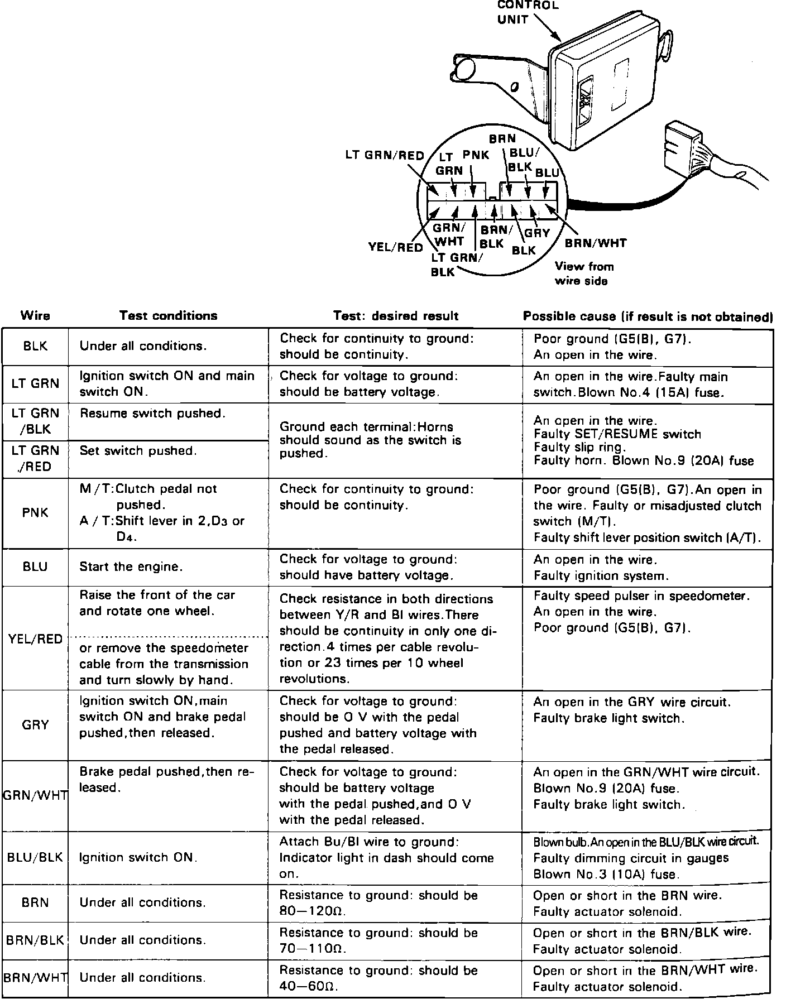
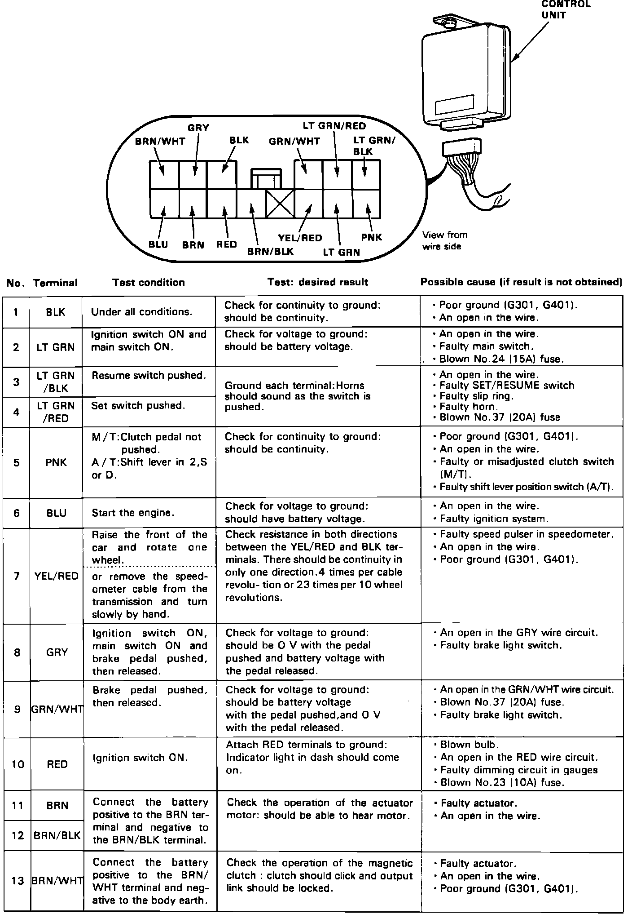
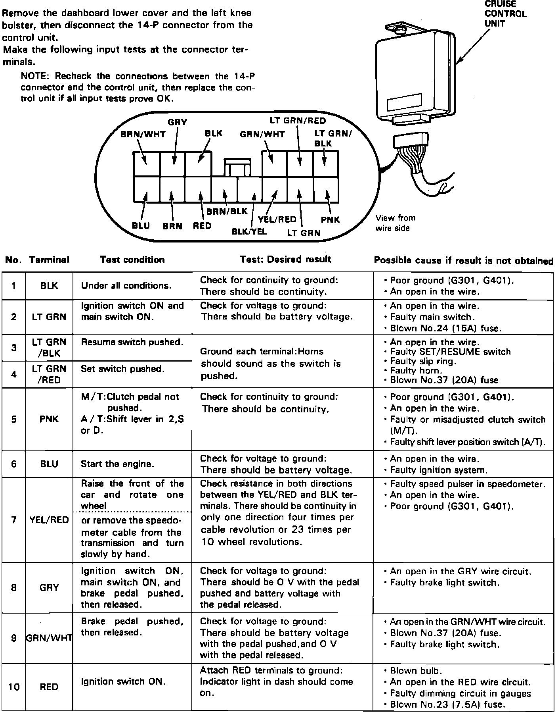
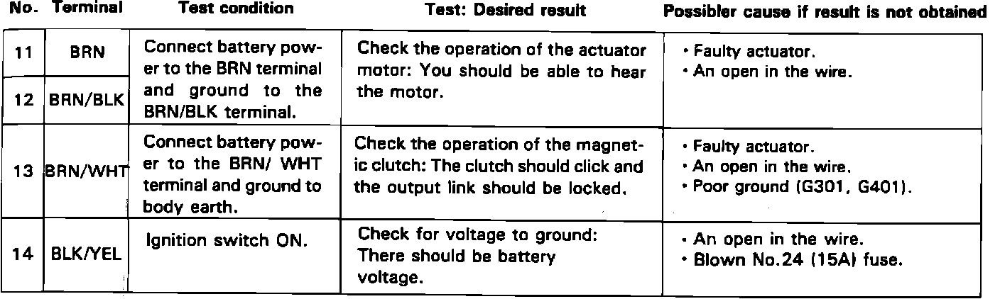

Cruise Control Module: Testing and Inspection
Fig. 6 Control Unit Input Test:

Fig. 7 Control Unit Input Test:

Fig. 8 Control Unit Input Test (Part 1 Of 2):

Fig. 8 Control Unit Input Test (Part 2 Of 2):

Lower fuse box and disconnect control box connector. Perform all tests shown in Figs. 6 through 8. Reinstall control unit if all tests are satisfactory.